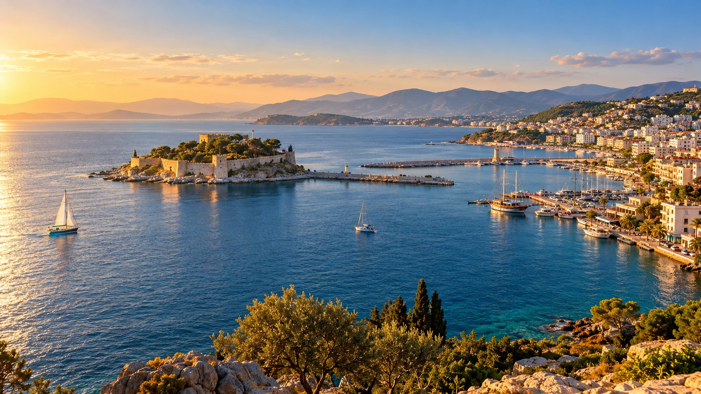

Itinerario flexible
Planifica según los horarios de llegada, los intereses y la energía del grupo.

Diseñado según tus planes
Comparte los lugares, el ritmo y las experiencias que te interesan para diseñar un itinerario privado por el Egeo.
Tu viaje, a tu manera
Cuéntanos dónde te alojas, qué te interesa y cómo quieres disfrutar del día. El itinerario definitivo se prepara en conversación con el equipo de Scala Nova.
Planifica según los horarios de llegada, los intereses y la energía del grupo.
Conecta yacimientos arqueológicos, pueblos, gastronomía y costa.
Comparte los lugares, el ritmo y las experiencias que te interesan para diseñar un itinerario privado por el Egeo.
Guía de planificación
Revisa los puntos esenciales antes de decidir.
Para quienes quieren elegir los lugares, el ritmo y las experiencias de su viaje por el Egeo. Revisamos las prioridades y el tiempo disponible con cada solicitud.
La fecha, el punto de salida, el tamaño del grupo y los intereses nos permiten preparar una primera propuesta.
El transporte, los paseos y el orden de las paradas pueden ajustarse al grupo dentro de las posibilidades de la ruta.
El precio, la disponibilidad y el programa definitivo se confirman tras conocer la fecha, el punto de salida y los datos del grupo.
Al preparar el programa se confirman el punto de salida, la fecha, el tamaño del grupo, las prioridades y las necesidades específicas.